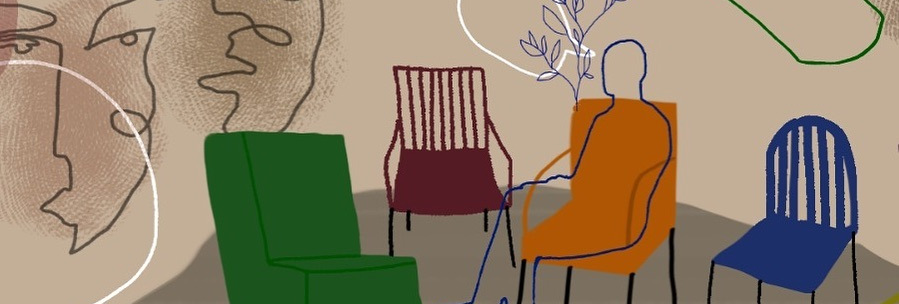

About
Following our first successful summer school held at SOAS in 2018, A History of Race & Resistance in Britain, this summer Consented Youth and Hacking Education will be hosting a three day summer school for young people and educational practitioners from the 29th-31st of July at B6 Sixth Form College in Clapton, Hackney.
The aim of the summer school is to provide a space for young people to participate in academic discussions through a combination of lectures and workshops. We will critically explore exploitative structures such as capitalism, colonialism and “race”. Additionally, it will aim to situate emerging scientific issues such as climate change, artificial intelligence and Big Data in the current socio-political context.
Attendees will have the choice to choose between three rooms, where workshops will be held concurrently throughout the days with a focus on encouraging discussion and debate amongst participants. The aim of the three days is to expose young people to academic conversations and theories, encourage discussion and debate, as well as to supplement mainstream history and politics curriculums.
One room will be academic in focus, looking at histories of imperialism and contemporary understandings of race. The second will be more discursive in nature encouraging participants to engage in complex discussions with one another. The third room will be led by hacking Education with sessions ran by Physics PhD students looking at science, education and society. At the same time attendees will have the option to take part in Thai Boxing training run by British and World Champion Thai Boxers programmed throughout the three days.
This event is targeted at young people, primarily those who are currently in secondary school or who have recently left. It is also open to those who are enrolled in Higher Education and interested members of the public. If you are a teacher or youth worker and wish to bring a group along please email consenteduk@gmail.com. You can register to the event here
Talks will all be recorded and made available on the Race in Britain YouTube channel. You can find the recorded lectures from last year's school here.
Hacking Education is a charity working towards equity in education through workshops in youth centres, schools and universities that primarily focus on science, technology and society.
Consented Youth is an educational project running weekly seminars within schools in East and South London aimed at readying students for university, fostering critical thinking and creating a space for students to explore complex ideas.
Programme
Day 1
| Time | Room 1 | Room 2 | Room 3 |
|---|---|---|---|
| 10:30-10:45 | Introduction and Orientation | ||
| 10:45-11:45 |
What is Colonialism? Consented |
Climate Change: From the Science to Conflict Dr Helen Adams, Kings College London |
|
| 11:45-12:00 | Break | ||
| 12:00-13:00 |
Resisting Colonialism: The Haitian Revolution Professor Gurminder Bhambra, University of Sussex |
Youth workshop on Mental Health Consented Youth |
|
| 13:00-13:45 | Lunch | ||
| 13:45-14:45 |
Colonialism and Climate Change Alex Kelbert, Black Lives Matter & Warwick University |
What’s driving climate change? |
Global Poverty and it’s Colonial Causes Health Poverty Action |
| 14:45-15:45 |
Colonial Amnesia and Brexit Dr Kojo Koram, Birkbeck University |
Can climate change be stopped? Dr Leon Sealey-Huggins, Warwick University |
|
Day 2
| Time | Room 1 | Room 2 | Room 3 |
|---|---|---|---|
| 10:30-10:45 | Introduction |
School to Prison-Pipeline Dr Karen Graham, Manchester Metropolitan |
|
|
School to Prison-Pipeline Dr Karen Graham, Manchester Metropolitan |
Artificial Intelligence Hacking Education |
||
| 11:45-12:00 | Break | ||
| 12:00-13:00 |
Race, Gangs and Knife Crime Dr Adam Elliot-Cooper, King's College London |
Manufacturing Addiction Dr Nick Srnicek, King’s College London |
|
| 13:00-13:45 | Lunch | ||
| 13:45-14:45 |
Race & Charter Flights Dr Luke De Noronha, Manchester University |
Big Data, Corporate Surveillance and Control Dr Jeremy Gilbert, University of East London |
|
| 14:45-15:45 |
Race & Migration Dr Nadine El-Enany, Birkbeck College |
Automation, Post work and Imperialism Dr Gareth Dale, Brunel University London |
|
Day 3
| Time | Room 1 | Room 2 | Room 3 |
|---|---|---|---|
| 10:30-10:45 | Introduction | ||
| 10:45-11:45 |
Homonationalism Dr Sita Balani, King's College London |
Philosophy of Education Mr Jack Bicker |
Youth Perspectives on Anti-Racism Consented Youth |
| 11:45-12:00 | Break | ||
|
Race & Class Struggle Professor Gargi Bhattacharya, University of East London |
Womens resistance: Education in India Dr Nabeela Ahmed |
||
| 13:00-13:45 | Lunch | ||
|
QTPoC* Resistance Dr Stephanie Davis, University of East London |
Education under occupation. Knowledge and the Palestinian Resistance Dr Mona Jebril, University of Cambridge |
||
| 14:45-15:45 |
Black Power! Dr John Narayan, Birmingham City University |
Music, Education and Resistance Lowkey |
|
* Queer & Trans People of Color
Register
The event is primarily aimed at sixth form students, teachers, youth workers and educators but is also open to the public. The summer school is free but attendees must register using our eventbrite page. Click here to register.